Homemade Hardware
Programming an ATtiny85
The ATtiny85 is a small microcontroller, popular because it can be used similar to an ATmega328 (from Arduino Uno), and because it is SMALL.
This guide will describe how to get a brand new ATtiny85 able to run your Arduino code.
- ATtiny85 Pinout
- Breadboard Setup
- Turn Arduino Uno into ISP
- Connecting the Wires
- Flash the Bootloader
- Uploading Code
- Programming Jig
Before you get started, make sure you have the ATtiny85 Arduino core installed from SpenceKonde on GitHub
ATtiny85 Pinout
The diagram below shows the details of the ATtiny85's pinout. Notice the Arduino labels given to the 5 GPIO, plus all the other ways the pins are named.

Below is a much simpler image, showing just what is needed for running your Arduino code.

Breadboard Setup
Start by placing the ATtiny85 in the middle of a breadboard. Connect the Vcc and GND pins to the Power and Ground rails on your breadboard.
Notice that on my breadboard, I have connected the Power and Ground rails on either side, to make it easier to organize things.
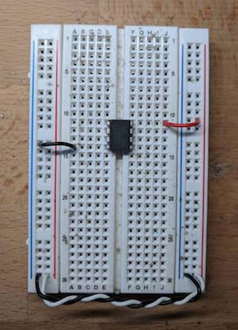{kind=link}
It is strongly recommended to put a 0.1uF capacitor on the Vcc pin of the ATtiny85, with the other side going to ground. This will help get rid of any noise on the power line.
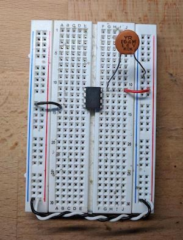{kind=link}
Finally, place a 10k Ohm resistor between the Rest pin and Power (Vcc). This will prevent the ATtiny85 from accidentally resetting.
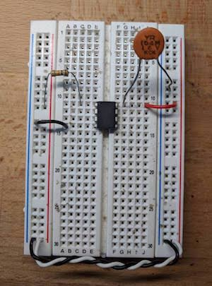{kind=link}
Turn Arduino Uno into ISP
This guide will use an Arduino Uno as our ISP (In-System-Programmer). The first step is to grab your Arduino Uno, and open up the Arduino IDE.
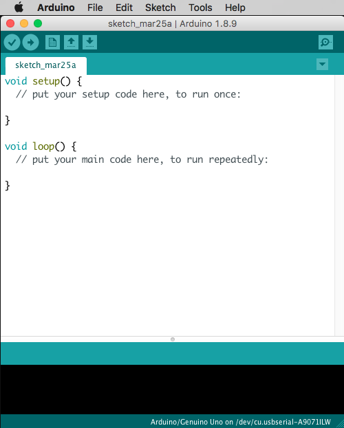{kind=link}
Make sure you have selected the Ardiuno/Genuino Uno as your board, and then open the ArduinoISP example sketch.
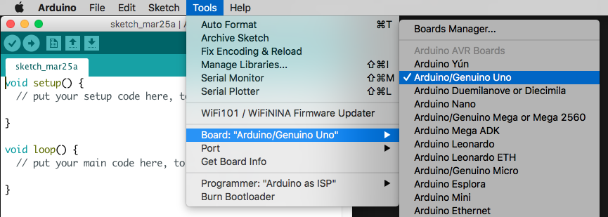{kind=link}
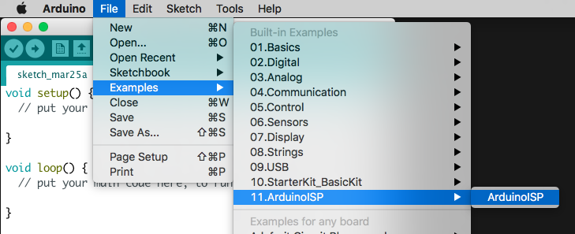
{kind=link}
Now upload the ArduinoISP sketch to your Arduino Uno. Congratulations, your Arduino Uno is now an ISP.
Once the ArduinoISP sketch is uploaded, add a 10uF capacitor between the Arduino Uno's Reset and GND pins. This will prevent the Arduino Uno from resetting while it's trying to program our ATtiny85
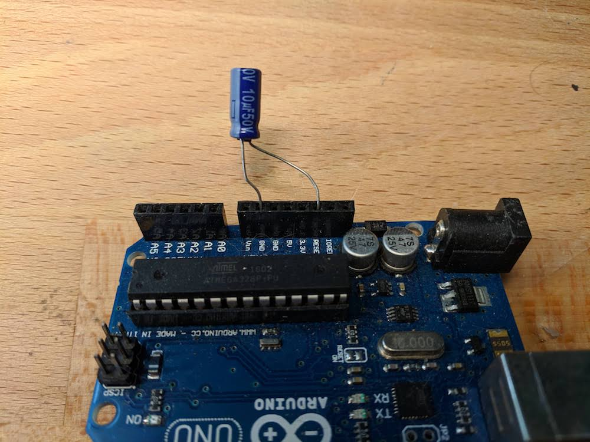{kind=link}
Then finally, tell your Arduino IDE that you will be using an Arduino as ISP. There are many other types of ISP, so it is important you select the correct on in the Tools menu
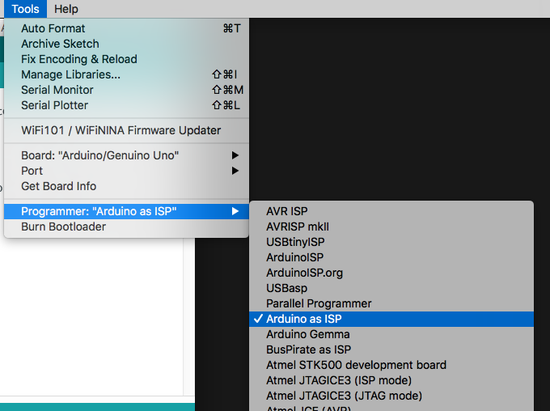{kind=link}
Connecting with Wires
Now it's time to wire it up. Start by connecting the Arduino Uno's 5V and GND pins to the breadboard's Power and Ground rails
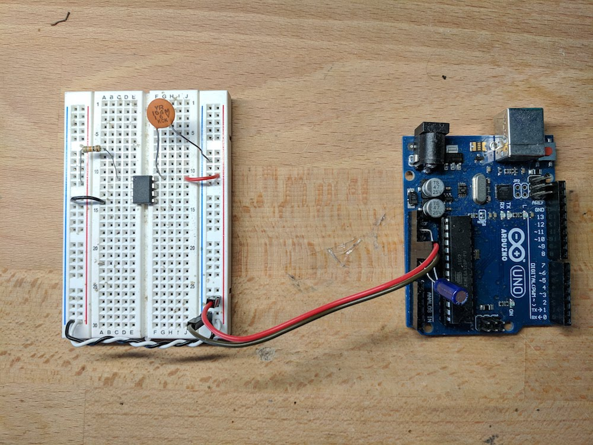{kind=link}
Now connect the data lines.
- (Uno) 13 → (tiny) SCK
- (Uno) 12 → (tiny) MISO
- (Uno) 11 → (tiny) MOSI
- (Uno) 10 → (tiny) Reset
{kind=link}
Here's a wonderful graphic created by highlowtech.com, so you're not confused at my messy pictures:

Flash the Bootloader
The first thing to do with a new ATtiny85 is to flash the bootloader. While this stop does not exactly save bootloader code to the ATtiny85, it does save the correct fuse settings. Like, for example, the clock speed and location.
Note that flashing the bootloader only needs to happen once for very ATtiny85. Afterwards, it will have the correct settings and you don't need to do it again (unless you want to change the settings).
Make sure you have the ATtiny core files installed into your Arduino IDE. My favorite ATtiny core is from SpenceKonde on GitHub.
Once you have that core installed (using Arduino's Board Manager), you are ready to flash the bootloader.
Got to the Tools menu, and under the "Board" section, select the "ATtiny25/45/85" under the ATtinyCore section.
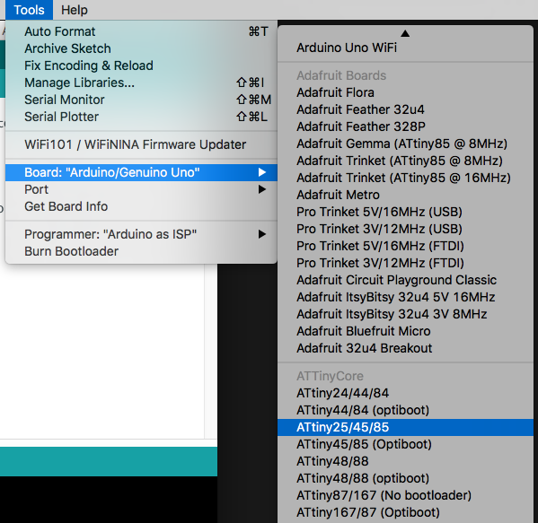{kind=link}
Now with the ATtiny85 selected, go to the "Clock" option and select "8 MHz (internal)"
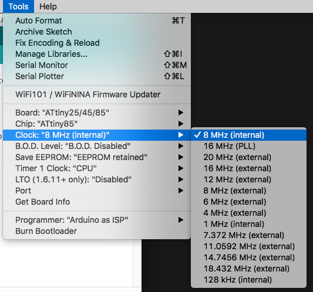{kind=link}
Now we're ready! Go to Tools menu and select "Burn Bootloader"
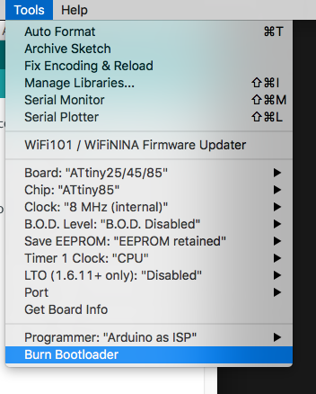{kind=link}
Uploading Code
Now that the bootloader is flashed and the correct clock settings are on the ATtiny85, we can upload our code.
Prepare a quick Blink sketch that flashes an LED on pin 3.
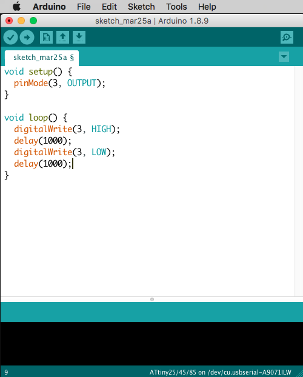{kind=link}
We are going to upload code using our ISP, we are NOT going to use the normal serial port method of uploading code. So, with everything powered on and connected, go up to the Sketch menu and select "Upload Using Programmer".
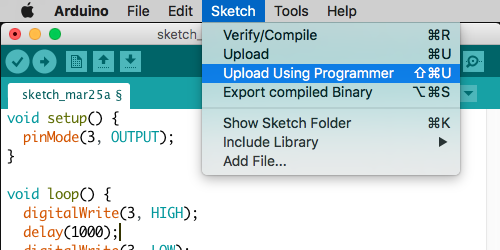{kind=link}
With an LED attached to pin 3, we should no see it blinking every 1 second.
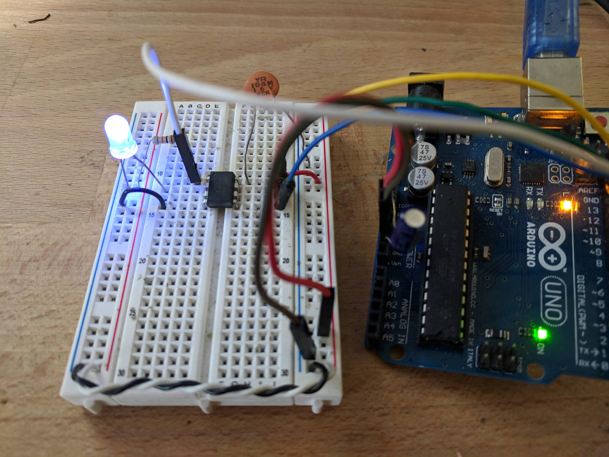{kind=link}
Programming Jig
Messing with all those wires can become annoying, and more importantly can lead to a lot of mistakes or errors. Maybe a wire broke? Maybe you put a wire in the wrong spot? Who knows.
To avoid these human errors, you can solder together a "programming jig", using simply perfboard, wire, a 10uF capacitor, an 8-pin socket, and some header pins. You can use one of these to both burn the bootloader, AND to upload your sketch to the ATtiny85. So easy!
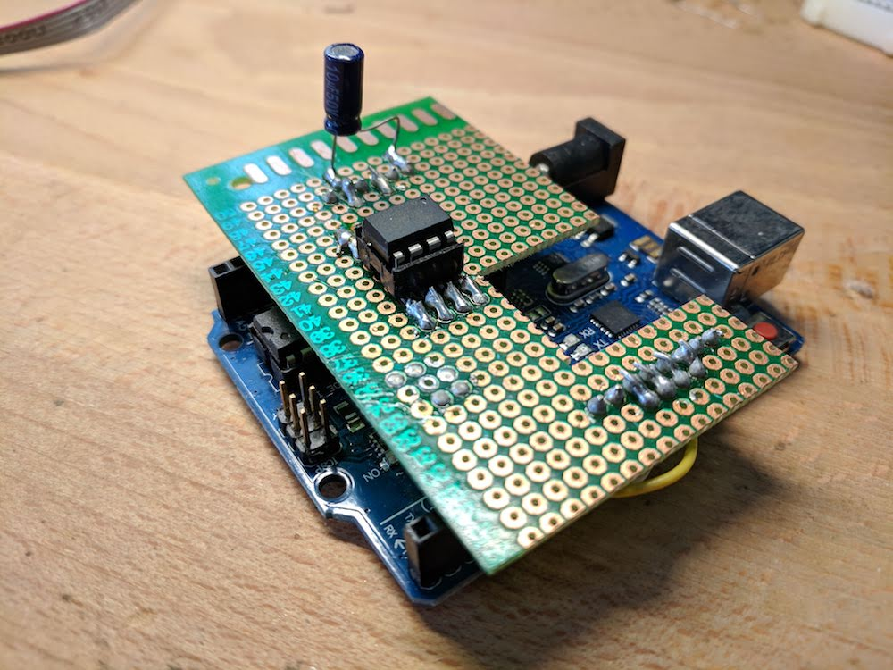{kind=link}
In the image above, the wires I soldered are underneath the perfboard. So you can't see them.
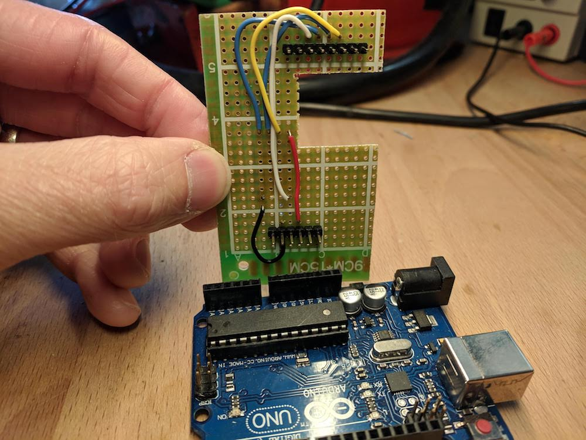{kind=link}
Also, below is a diagram showing where to solder connections with your wires.
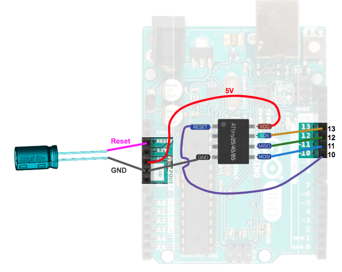 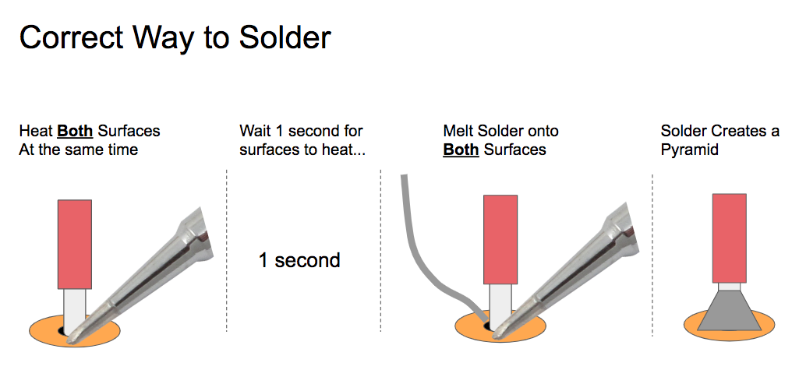 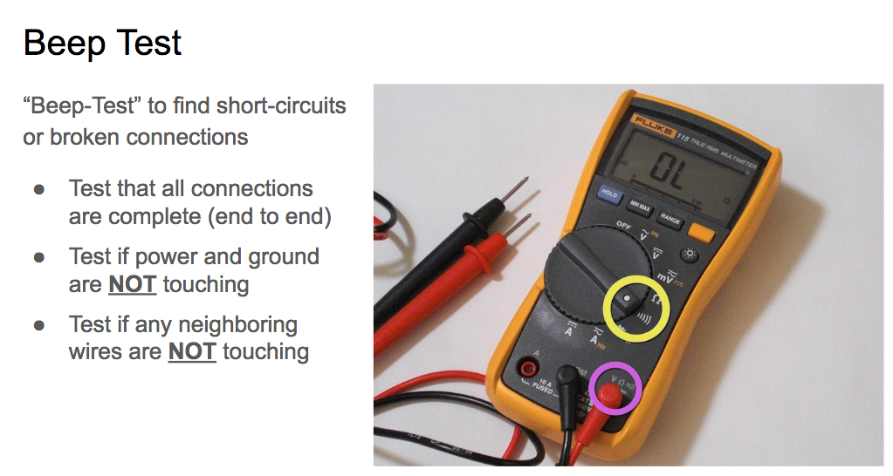{kind=link}
{kind=link}
{kind=link}
Now you can program the ATtiny85 outside of your breadboard. These makes it easier to upload code, and it means you have more ATtiny85 pins to use on your breadboard (awesome!).
Once the bootloader is burned, and the code is uploaded, you can then (gently) remove the ATtiny85 from the socket, and put it in your breadboard.
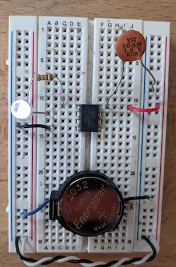{kind=link}